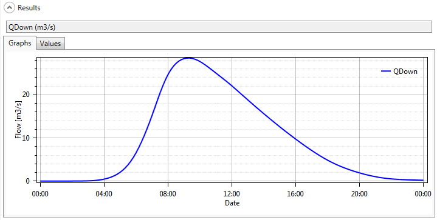
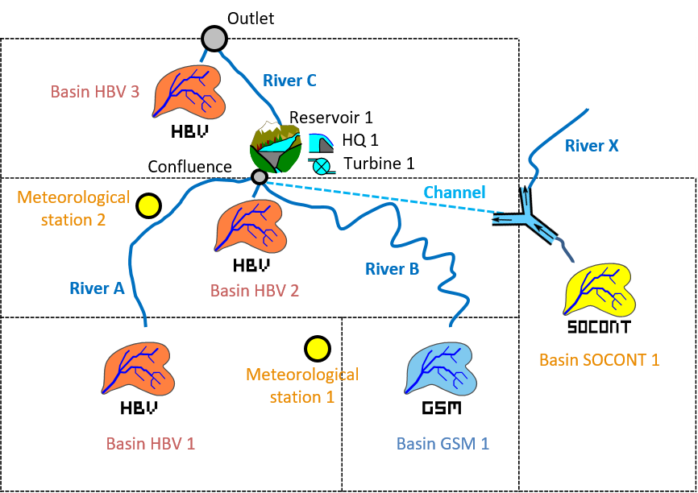
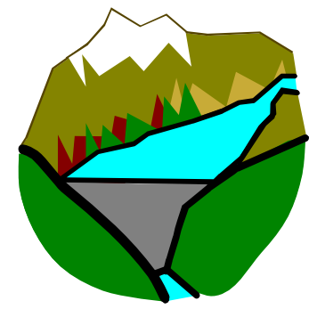
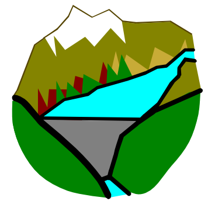
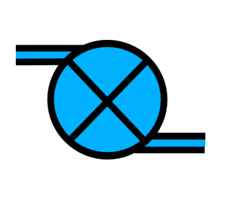
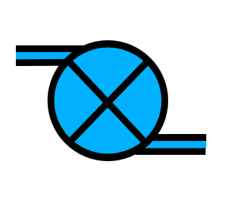

16 Examples of application
This document contains the User and Technical Manuals of the RS MINERVE software. These manuals are constantly updated. This version corresponds to the Software version 2.9.1.
In this chapter, some examples of application are presented in order to deepen the knowledge of the program. These basic examples are designated to facilitate the learning of the program RS MINERVE. The examples are organized according to the degree of difficulty.
The use of RS MINERVE in case studies has demonstrated the capacity of the program to correctly reproduce the real behavior of river basins. In addition, the program facilitates the search of different scenarios of operation while optimizing complex systems in a satisfactorily way.
This chapter contains three examples with didactic aims:
Example 1 – Simple basin with only runoff.
Example 2 – Combined full basin with meteorological stations.
Example 3 – Equipped basin with a hydropower scheme.
Example 4 – Automatic calibration of a model
16.1 Example 1 – Simple basin with only runoff
In the first example the objective is to model the production of a net rain-flow of three impermeable basins, then the propagation of two hydrographs, the implementing of three inflows at a confluence and finally their propagation to the model outlet (Figure 16.1).
The three impermeable surfaces are supposed to be located in the same region, thus receiving an identical precipitation. Each surface has its own outlet into different rivers (A and B) which are joined later on in a single final river (C) before flowing into the outlet of the model. The parameters and the state variables of the three surfaces, of the three rivers and the precipitation data are provided in ?tbl-examples_characteristics_ex1. The three rivers are modeled with the kinematic wave model.
Objective of Example 1
The requested result is the hydrograph at the model outlet during 24 hours, after the beginning of the precipitation, as well as the peak discharge and the peak time.
The simulation parameters are:
Simulation time step = 600 s
Recording time step = 600 s
A uniform and null ETP is assumed for this example (the user can check the selected ETP method in the RS MINERVE settings).
Resolution of Example 1
This first example is a simplified representation of the reality. Despite of that, it allows the familiarization with the concept of RS MINERVE and to know more about its hydrological objects.
At first, the object “Time Series” is introduced. Clicking once on its icon in the Objects frame, a pen appears. You can then click in the graphic interface for creating the object in the position you want. Next, the three run-off surfaces are created by means of the object “SWMM” . The three rivers are introduced by selecting the model “Kinematic Wave” . The model built-up will be finished with the introduction of the two objects “Junction”  .
.
The graphical interface at this stage is presented in Figure 16.2.
After creating the new objects, topological links or connections have to be established. To do so, it is sufficient to press once the space bar of the keyboard to pass in “connections” mode. In Editing tools, the Connections button is then automatically pressed (Figure 16.3). Flying over each objet, the curser presented before as an arrow now appears as a cross. Next, click from the object “Time Series” to the object “SWMM1”, thus creating a topological link.
The others objects are connected in the same way. Press again the space bar of the keyboard to return to selection mode. The construction of all the model objects and the resulting topologic links is thus achieved as presented in Figure 16.4 and it only remains the introduction of the parameters.
By double clicking on the links just created (blue arrows), the information transferred between “Time Series” and the three run-off surfaces as well as that between all other objects from up- to downstream is verified (Figure 16.5).
In clicking double on the Time Series object, the associated frame is opened on the right of the screen and the values “Time (s) - P (mm/h)” are introduced (Figure 16.6).
Next, for each SWMM object (), the respective parameters (values available in ?tbl-examples_characteristics_ex1) are defined by double clicking on every object and introducing them by the help of the both Parameters and Initial conditions frames. The parameters of the Rivers are introduced in the same way (Figure 16.7).
The date parameters of the simulation are modified in Solver frame on the left of the screen (Figure 16.8) before the calculation. For both dates “Start” and “End” an arbitrary date is proposed, but the “End” date has to finish 24 hours later than “Start” date. The “Simulation time step” and the “Recording time step” have a value of 600 s.
Constructed final model can be now saved clicking in the button  and giving a name to the file (e.g. “Example1.rsm”). This way the model could be loaded later to do new simulations (Figure 16.9).
and giving a name to the file (e.g. “Example1.rsm”). This way the model could be loaded later to do new simulations (Figure 16.9).
Before running calculation, a pre-simulation validation of the model parameterization can be made in clicking in the button  (Solver frame). Its report is summarized on the right of the interface.
(Solver frame). Its report is summarized on the right of the interface.
Finally, the simulation is initiated by clicking on the button Start in the Solver frame.
Results of Example 1
In order to access to the calculation results for each object it has to be clicked two times on any of them. For example, clicking double on the object Outlet, its dialog box is opened on the right and the simulated hydrograph, being the objective of the Example 1, is shown (Figure 16.10).

If we check the values (Figure 16.11), we can found that the maximal discharge (28.442 m3/s) arrives at 09:20 (assuming the simulation starts at 00:00).
16.2 Example 2 – Combined full basin with meteorological stations
The hydrological system proposed by the Example 2 includes four hydrological models of production, a GSM and three HBV models as well as the rivers of the basin. The discharge production in the sub-basins area is based on given precipitations and temperatures from a database.
This expected model is represented in Figure 16.12.

The parameters of the objects are provided in ?tbl-examples_characteristics_ex2_1 to ?tbl-examples_characteristics_ex2_3 and the precipitation and temperature data are in the database “Database manual”.
Objective of Example 2
The objective of this example is to determine the hydrograph in the outlet of the system during the period between the 08.05.2013 00:00 and the 15.05.2013 00:00, the peak discharge and the peak time, as well as the discharge created at the outlet of each sub-basin.
The simulation parameters are:
Simulation time step = 600 s
Recording time step = 600 s
A uniform and null ETP is assumed for this example (the user can check the selected ETP method in the RS MINERVE settings).


Besides, two meteorological real stations are included in the data base:

Resolution of Example 2
First of all, the subcatchment with HBV  and GSM models will be set up. Then, the three rivers (with Kinematic Wave) and the two junctions
and GSM models will be set up. Then, the three rivers (with Kinematic Wave) and the two junctions  are also added as presented in Figure 16.13 (more details are given in Example 1 for model construction, including the link between each object and their parameterization).
are also added as presented in Figure 16.13 (more details are given in Example 1 for model construction, including the link between each object and their parameterization).
After that, the models are linked from upstream to downstream (Figure 16.14) and the relations created can be visualized by double clicking on each blue arrow (Figure 16.15, Figure 16.16).
The parameters associated to each object are then introduced (values available in previous tables). The result is presented for both HBV 1 and GSM 1 models in Figure 16.17.

Secondly, virtual weather stations are inserted. For its accomplishment, 4 Virtual Weather Stations  are created and connected according to Figure 16.18. The topology of the relations created in this case is detailed in Figure 16.19. Then the parameters are introduced (Figure 16.20) with the available values presented previously.
are created and connected according to Figure 16.18. The topology of the relations created in this case is detailed in Figure 16.19. Then the parameters are introduced (Figure 16.20) with the available values presented previously.


Constructed model can be now saved clicking in the button  and giving a name to the .rsm file (e.g. “Example2.rsm”).
and giving a name to the .rsm file (e.g. “Example2.rsm”).
Next, the meteorological data have to be loaded: the dialog box of the database is opened clicking in  (Figure 16.21) for loading the corresponding database file (“Database manual.dbx”).
(Figure 16.21) for loading the corresponding database file (“Database manual.dbx”).
The user can click on the Database tab to visualize or modify the series of the database (Figure 16.53).

Once the database loaded, the user can connect the database to the hydrological model. For achieving this purpose, the user has to choose the correct data source in the corresponding frame (Figure 16.23): the group “Measure” and the dataset “DataSet Example 2and3” for the current example. Since no source, TurbineDB, reservoir or consumer objects exist in the model, it is not necessary to fill up their data sources.
Finally, and after achieve a simulation, the weight of each meteorological real station can be checked by clicking at one Virtual Weather station of the hydrological model (Figure 16.24).
The pre-simulation validation ( ) allows to valid the model. If the message: “Model ‘Example 2’ is valid” appears, the simulation can be started by clicking in the button Start.
) allows to valid the model. If the message: “Model ‘Example 2’ is valid” appears, the simulation can be started by clicking in the button Start.
Results of Example 2
Once finished the calculation, the hydrograph in the outlet of the system, among others, can be visualized (Figure 16.25).

If we check the values (Figure 16.26), we can found that the maximal discharge arrives on May the 9th, 2013 at 07:00 and the discharge value is 8.154 m3/s.

All the simulated variables of the model (including the discharge in each sub-basin outlet) can be visualized (Figure 16.27 and Figure 16.28) clicking on the “Selection and plots” frame and in selecting the series to draw as presented in Section 5.2. Finally you can export the selection results in excel format clicking in “Export results to…” in the series frame.
16.3 Example 3 – Equipped basin with a hydropower scheme
This example, allows showing the potential of RS MINERVE for equipped basins. The model starts with the previous model built in Example 2 and adds a hydropower scheme as well as a supplementary basin with an intake. The complete model is presented in Figure 16.29.

HBV 1, HBV 2 and GSM 1 basins flow through the Reservoir 1. Intake located downstream of a SOCONT model provides supplementary discharge up to 2 m3/s. It is assumed that the propagation in the channel is insignificant and thus it is not necessary to include it in the model (in other case, we could built it with the Reach Kinematic object).
The reservoir includes a turbine and a spillway. The turbine generates electricity as long as it is possible for a capacity of 1 m3/s. These two reservoir outflows flow in the River C up the outlet, where they are joined by the production of HBV 3 sub-basin. All the parameters of the different objects are provided in ?tbl-examples_characteristics_ex3_1 and ?tbl-examples_characteristics_ex3_2. The temperature and precipitation data are in the database “Database manual”. A uniform and null ETP is assumed for this example (the user can check the selected ETP method in the RS MINERVE settings).
Objective of Example 3
Part A
The wanted result for this example is the inflow in the reservoir, the spillway discharge and the hydrograph in the outlet of the model for the period between the 08.05.2013 00:00 and the 15.05.2013 00:00 (as well as the peak discharge and the peak time).
Part B
Second issue aims to know if the reservoir could be managed in order to reduce the peak in the outlet of the system. The objective of this extension is to implement a facility to release water for preventive purposes.


Additionally, initial discharge (\(Qini\)) of River C is in this case 1 m3/s.
Resolution of Example 3 – Part A
In the first place, the model of the Example 2 is opened. The connection between the “Confluence” and the River C is erased and objects Virtual Weather Station  , SOCONT
, SOCONT  , Reservoir , Spillway
, Reservoir , Spillway  , Turbine  and Junction
, Turbine  and Junction  are added, as presented in Figure 16.30.
are added, as presented in Figure 16.30.
New objects are always linked from upstream to downstream (e.g.: SOCONT 1 to Diversion 1, Diversion 1 to Confluence (\(Qdiverted\)) and to Outside of the Basin (\(Qdown\)), Reservoir 1 to HQ 1, Reservoir 1 to Turbine 1, Turbine 1 to River C, etc). After creating the links (Figure 16.31), the news relations can be visualized by double clicking on each blue arrow (Figure 16.32 to Figure 16.35).


The introduced parameters of new objects Diversion 1, Reservoir 1, HQ 1 and Turbine 1 are presented in Figure 16.36 to Figure 16.39.


As shown in Figure 16.39, the thresholds in the level of the reservoir to start (2127 masl) and to stop (2110 masl) the turbine cycle, as well as the first suggested value for the turbine cycle (1 = turbine) have to be introduced.
Once the construction finished, it can be saved clicking in the button  and giving a name to the .rsm file (e.g. “Example3.rsm”).
and giving a name to the .rsm file (e.g. “Example3.rsm”).
Before starting the calculation, the meteorological data have to be loaded: the dialog box of the database is opened clicking in  Open for loading the corresponding database file (“Database manual”). The user can click on the Database tab to visualize or modify the series of the database (Figure 16.53).
Open for loading the corresponding database file (“Database manual”). The user can click on the Database tab to visualize or modify the series of the database (Figure 16.53).
Once the database loaded, the user can connect the database to the hydrological model. For achieving this purpose, the user has to choose the correct data source in the corresponding frame (Figure 16.40): the group “Measure” and the dataset “DataSet Example 2and3” for the current example. It is not necessary to fill up the data sources of the reservoir as it will take the default value for the simulation.
Finally, the necessary parameters of the simulation are chosen in the menu Solver frame according to the propose dates in the wording. The other values (time intervals) stay as indicate in the program, being 600 s in both cases.
If the pre-simulation validation allows to valid the model (with the message: “Model ‘Example 3’ is valid”), the simulation can be initiated clicking in the button Start.
Results of Example 3 – Part A
All the results can be visualized by double clicking in the corresponding object. Figure 16.41 presents the hydrograph at the system outlet.
The peak discharge arrives on May the 9th, 2013 at 21:40 and the peak discharge is equal to 8.482 m3/s.
To summarize the simulated balance of Reservoir 1, an analysis of inputs/outputs in the Reservoir 1 is realized with the “Selection and plots” module. The inflow into the Reservoir 1 (Confluence), the spillway discharge (HQ 1), the turbine flow (Turbine 1), the total flow at the downstream of the reservoir (River C, \(Qup\)) and the reservoir level evolution (Reservoir 1) are presented in Figure 16.42. Despite the turbine, the reservoir level reached its maximal fill rating with an overflow which lasted several days. At the end of the simulation, the reservoir level comes around 90 cm above the initial level.

Resolution of Example 3 – Part B
In order to create an outlet or a facility for releases, one way is to define a turbine connected to the reservoir (Figure 16.43). We create a new turbine (Turbine 2) and make the connections from the reservoir to the new turbine and from the turbine to River C. Also we create a time series element connected to the new turbine where we will define the releases from the reservoirs.

Notice that actually the new turbine is representing a sluice of the reservoir.
Once the model has been adapted we have to define the preventive releases in the corresponding Turbine 2. Analyzing the results of the example one can think that preventive release should start near 13h00 of first day and finish eleven hours later.
As in the time series we have to define time in seconds (0 seconds corresponds to the start time of the simulation), the start is at 46800 s and the end at 86400 s. Moreover, it is considered that the release must take place only when the level in the reservoir exceeds 2128 masl, and stops when it is under 2125 masl.
The value of the releases depends on the capacity of the sluice and the decision of the manager. In this case, a discharge of 5 m3/s is defined, as presented in Figure 16.44.

New objects are linked as before, from upstream to downstream, obtaining same relations, as presented in Figure 16.45.
Results of Example 3 – Part B
In the following Figure 16.46 we can see the new flows of the outlet and other variables. As it can be seen the peak is reduced to less than 8 m3/s due to the preventive releases at the outlet of the model (Figure 16.46). Moreover, with the extra releases, we have created a first artificial peak.
Maximum water level on the reservoir, 2128.4731 m a.s.l., is at this case smaller than without the extra release of Part A (maximum water level of the part A was 2128.467 m a.s.l.).
To compared this results with the results of Part A, same results are presented, i.e., an analysis of inputs/outputs in the Reservoir 1. The inflow into the Reservoir 1 (Confluence), the spillway discharge (HQ 1), the turbine flows (Turbine 1 and Turbine 2), the total flow at the downstream of the reservoir (River C, \(Qup\)) and the reservoir level evolution (Reservoir 1) are presented in Figure 16.47.

Although the objective has achieved, many issues emerge from the management of the reservoir. How much water do we have to release? Are we aggravating the situation downstream? How much energy will we lose if the flood is not as important as expected? And so on.
16.4 Example 4 – Automatic calibration of a model
This example allows an introduction to the use of the tool of hydrologic calibration in Expert module. The model starts with the previous model built in Example 2, with the same parameters. The calibration will be based on the comparison between observed and simulated discharges. Through this example (Figure 16.48), five parameters are calibrated. Two parameters are calibrated for the GSM object and three for the HBV model:
GSM-An, the degree-day snowmelt coefficient
GSM-Agl, the Degree-day icemelt coefficient
HBV-FC, the maximum soil storage capacity
HBV-SUMax, the upper reservoir water level threshold
HBV-Kr, the near surface flow storage coefficient
The range of values for the calibration can be defined based on the values given as regular range in Section A. The temperatures, the precipitations and the outflow observed are in the database “Database manual”. A uniform and null ETP is assumed for this example (the user can check the selected ETP method in the RS MINERVE Settings).

Objective of Example 4
The wanted result is the new values for the calibrated parameters of the GSM and HBV models after the automatic calibration. For the calibration, observed and simulated data are compared at the confluence point and at the outlet for a period between the 01.09.2011 00:00 and the 31.08.2012 00:00. In this example, the calibration uses an Objective Function (OF) with a weight of four for the Nash indicator, two for the Pearson Correlation Coeff indicator, four for the Relative Volume Bias indicator and zero for the other indicators. The “Simulation time step” and the “Recording time step” are fixed to 600 s.
Resolution of Example 4
For the calibration, it is necessary to add two source objects  to have a reference flows (observed discharges) at the confluence point and at the outlet. Two comparators objects
to have a reference flows (observed discharges) at the confluence point and at the outlet. Two comparators objects  are also necessary to compare the results of the simulation with the reference data (observations) coming from the source object.
are also necessary to compare the results of the simulation with the reference data (observations) coming from the source object.
The Confluence and the Source 1 are connected to the comparator 1. The Outlet and the Source 2 are connected to the Comparator 2. The relations created can be visualized by double clicking on each blue arrow (Figure 16.49, Figure 16.50, Figure 16.51).

Constructed model can be now saved clicking in the button  and giving a name to the .rsm file (e.g. “Example4.rsm”).
and giving a name to the .rsm file (e.g. “Example4.rsm”).
Next, the meteorological data have to be loaded: the dialog box of the database is opened clicking in  (Figure 16.52) for loading the corresponding database file (“Database manual.dbx”).
(Figure 16.52) for loading the corresponding database file (“Database manual.dbx”).
The user can visualize or modify the database (?fig-examples_database_model_ex4).

Once the database is loaded, the user can connect the database to the hydrological model. For achieving this purpose, the user has to choose the correct data source in the corresponding frame (Figure 16.54): the group “Measure” and the dataset “DataSet Example 4” for the current example.

Then, the user has to choose the series identifier for each Source object (the series of the database which contains the observed discharges) as shown in Figure 16.55.

In order to clarify the use of the Calibrator tool, the different objects of the model will be aggregated in 2 zones:
Zone 1: all the objects upstream the “Confluence” object (including the “Confluence”).
Zone 2: the rest of the objects of the model.
For that, the user has to double-click on each objects of the Zone 1 and change the Zone form 0 (default) to 1 as shown in Figure 16.56. The user will proceed similarly for the Zone 2.

Finally, the module of hydrologic calibration can be launched by clicking on Expert \(\rightarrow\) Calibrator in the Modules frame (Figure 16.57).

Two calibration configurations can be created, one for each zone of the model (Figure 16.58). Give the order 1 to the calibration of Zone 1 (this one will be executed first) and order 2 to the calibration of Zone 2 (this one will be executed next).

For each calibration configuration, in the Selection frame the HBV and GSM objects types are selected with the corresponding zone (Figure 16.59).

The parameters to calibrate are checked in the Parameters frame (Figure 16.60). For each of them, the minimum and maximum values are:
GSM-An: 0.5 – 10
GSM-Agl: 0.5 – 10
HBV-FC: 0.05 – 0.65
HBV-SUMax: 0 – 0.1
HBV-Kr: 0.05 – 0.5
The source of the initial values is selected as random for the parameters to calibrate and from model for the others.

In the Comparators frame, select alternatively the comparator whose the observed discharges will be used for the calibration of the corresponding zone (Comparator 1 for the first calibration configuration, and Comparator 2 for the second one).
In the Objective Function (OF) frame the weight of the Nash and Relative Volume Bias coefficient are settled to 4 and the weight of the Pearson relative coefficient is 2. The other coefficients are all settled to zero (Figure 16.62). The default algorithm parameters are used.

After specifying the calibration period in the Solver tab of the Hydrologic parameters optimization frame, the calibration configuration can be saved and then started.
At the end of the calibrations the final parameters obtained are collected in the current model. If the model is saved, the parameters are stored; if not, the hydrological model keeps preliminary parameters.
Results of Example 4
Once the calculation is finished (after approximately 1’300 iterations for the confluence calibration and 400 iteration for the outlet calibration), the best values obtained for the parameters can be visualized in the Summary results frame. From a maximum possible value of the Objective Function (OF) of 6, the best score provided by the algorithm is 5.448 and 5.560 for the confluence calibration and the outlet calibration, respectively.
Hereafter (Table 16.1 and Table 16.2) the results of the calibration (since the algorithm contains the random calculations, it is possible to obtain a similar but not exactly the same result).
| Initial Parameter | Initial | Parameter |
Best Parameter | Best | Parameter |
|
|---|---|---|---|---|
| Confluence | Outlet |
Confluence | Outlet |
|
| GSM - An | 6 | - |
0.761 | - |
| GSM – Agl | 7 | - |
0.500 | - |
| HBV – FC | Different values | 0.275 |
0.126 | 0.534 |
| HBV – SUMax | Different values | 0.0055 |
0.100 | 0.0781 |
| HBV – Kr | Different values | 0.3 |
0.281 | 0.152 |
| Initial Performance | Initial Performance | Final Performance | Final Performance | |
|---|---|---|---|---|
| Confluence | Outlet | Confluence | Outlet | |
| Nash | -26.38 | 0.87 | 0.89 | 0.91 |
| Nash-ln | -2.67 | 0.81 | 0.80 | 0.84 |
| Pearson Correlation Coeff. | 0.57 | 0.95 | 0.95 | 0.96 |
| Kling-Gupta Efficiency | -2.20 | 0.91 | 0.94 | 0.95 |
| Bias Score | -9.03 | 0.99 | 1 | 1 |
| RRMSE | 3.95 | 0.26 | 0.25 | 0.22 |
| Relative Volume Bias | 3.17 | 0.07 | 2E-5 | -6E-7 |
| Normalized Peak Error | 0.63 | 0.001 | -0.02 | -0.005 |
| OF | -117.06 | 5.12 | 5.45 | 5.56 |
The simulation fits pretty well the outflow observed (Figure 16.63). Thus, the new parameters after the calibration can be kept by saving the model.